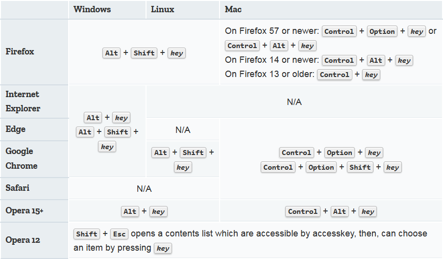

Let's get started: ▶️
Watch it :)
Welcome!
Fetching files...
◪ Accessing keys:
- For FIREFOX users_🦊
- Alt ➕ Shift ➕ q
- Alt ➕ Shift ➕ w
- Alt ➕ Shift ➕ b
- Alt ➕ Shift ➕ n
- Alt ➕ Shift ➕ v
- Alt ➕ Shift ➕ s
- Alt ➕ Shift ➕ a
- Alt ➕ Shift ➕ x
- Alt ➕ Shift ➕ z
- Alt ➕ Shift ➕ i
- Alt ➕ Shift ➕ j
- Alt ➕ Shift ➕ l
- Alt ➕ Shift ➕ k
◪ The way to activate the accesskey depends on the browser and its platform:

Source - developer.mozilla.org
That's it! ENJOY:)
🔗 Back To console